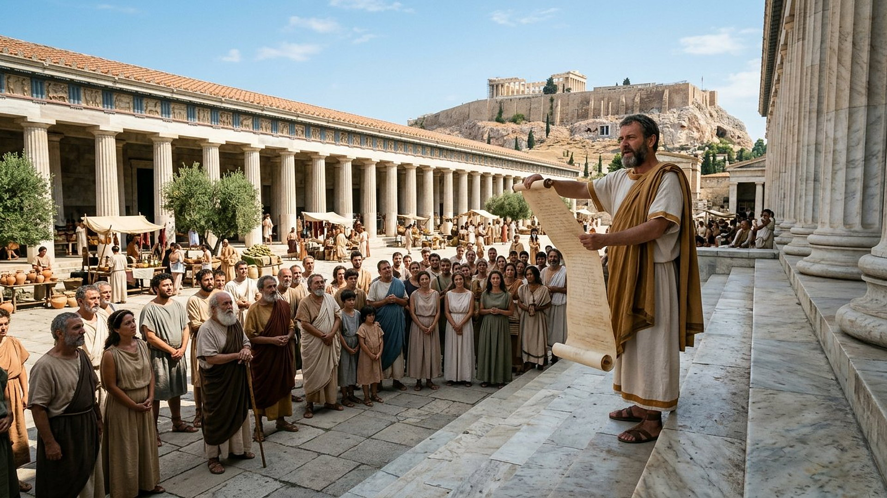
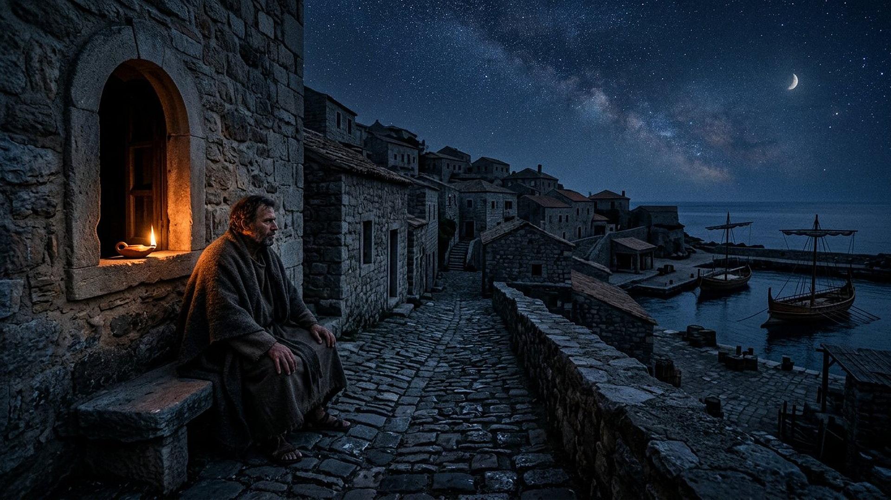
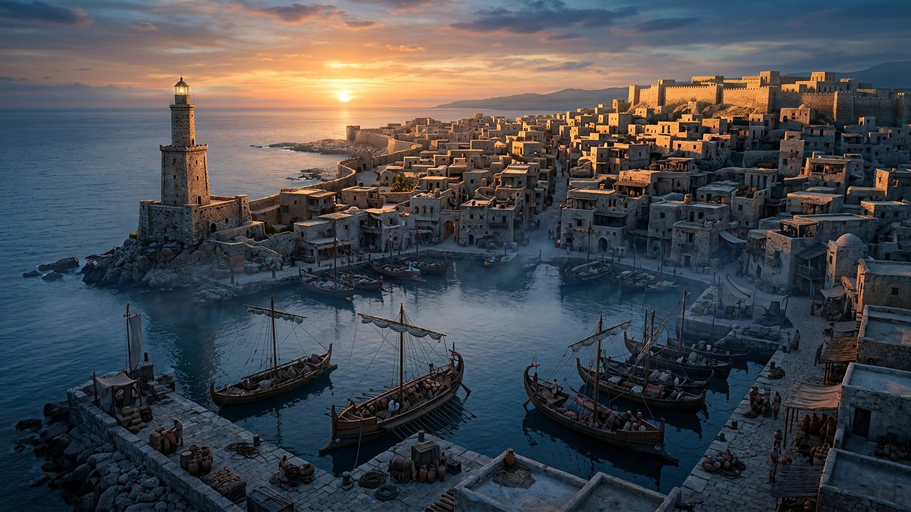

Salle 38 — 1 Thessaloniciens 5 À VENIR
« Paix et sécurité » : la proclamation qui précède
« Quand les hommes diront : Paix et sécurité ! alors une ruine soudaine les surprendra. » — 1 Thessaloniciens 5:3 (d’après Segond 1910)
Reconstitution numérique — le héraut et la foule rassurée : la confiance affichée, premier temps de la séquence.
Une phrase que tout le monde aura entendue
Paul écrit aux Thessaloniciens, vers 50 de n. è., l’une des plus anciennes lettres du Nouveau Testament. Sur « les temps et les moments », il refuse tout calendrier — « vous n’avez pas besoin qu’on vous en écrive » — puis il donne un repère d’un autre genre : « Quand les hommes diront : Paix et sécurité ! alors une ruine soudaine les surprendra, comme les douleurs de l’enfantement surprennent la femme enceinte, et ils n’échapperont point » (1 Thessaloniciens 5:3).
Dans la lecture retenue par ce musée, cette proclamation ouvre la séquence finale présentée en salle 15 : un moment où l’humanité, par ses instances dirigeantes, se déclarera parvenue à la paix et à la sécurité — juste avant la chute de Babylone la Grande (salle 36), puis la grande tribulation. Aucun discours, aucun traité, aucune déclaration moderne n’est désigné ici comme « l’accomplissement » : des proclamations de paix, l’histoire en compte par centaines. Le texte décrit une configuration — une assurance collective affichée au mauvais moment —, pas une manchette à identifier dans les journaux.
Le récit en cinq temps
Avancez dans la lettre, d’une station à l’autre.

Le banc des preuves : une lettre très tôt copiée
FAIT ARCHÉOLOGIQUE
Le Papyrus 46, vers 200 de n. è. (EV-47)
Le Papyrus 46 (𝔓⁴⁶), copié vers 175-225, est l’un des plus anciens recueils des lettres de Paul : 86 feuillets conservés entre la Chester Beatty Library (Dublin) et l’université de Michigan, contenant notamment 1 Thessaloniciens. Les feuillets de la fin du chapitre 5 sont en partie perdus — il en subsiste des fragments —, mais le témoin établit que la lettre circulait, recopiée avec soin, environ 150 ans après sa rédaction. L’avertissement n’est pas une invention médiévale.
LECTURE PROPHÉTIQUE
Pourquoi y voir le premier maillon ?
Parce que l’ordre des visions converge : Paul place la proclamation immédiatement avant une « ruine soudaine » dont on « n’échappe pas » ; la Révélation place la chute de Babylone la Grande au début de la grande tribulation (salle 36). Le musée lit donc la proclamation comme le seuil de la séquence — une assurance humaine proclamée au sommet, juste avant que les événements n’échappent à leurs auteurs.
DÉBATTU
Les autres lectures, honnêtement
Beaucoup de commentateurs lisent « paix et sécurité » comme un slogan de la propagande impériale romaine — la pax romana — que Paul retournerait ironiquement contre ses auditeurs du Ier siècle. D’autres y voient une formule de fausse assurance religieuse de tout temps. Ces lectures éclairent le texte dans son contexte ; la lecture séquentielle et future retenue ici est signalée comme lecture prophétique, non comme un fait.
Quatre clés pour ne pas se tromper de proclamation
1. Aucune manchette désignée
Traités, sommets et déclarations de paix jalonnent chaque décennie. Pointer l’un d’eux comme « l’accomplissement » serait exactement le calcul que Paul refuse dès le premier verset du chapitre : ni date, ni manchette à épingler.
2. Un « ils » qui n’est pas « vous »
Paul oppose ceux qui disent « paix et sécurité » à ses lecteurs : « Mais vous, frères, vous n’êtes pas dans les ténèbres, pour que ce jour vous surprenne comme un voleur » (5:4). La surprise n’est pas le destin de qui veille.
3. La vigilance est sobre, pas alarmée
« Ne dormons donc point comme les autres, mais veillons et soyons sobres » (5:6) : ni panique, ni ivresse des événements. L’équipement décrit est défensif — cuirasse de la foi et de l’amour, casque de l’espérance (5:8) —, jamais offensif.
4. La séquence donne le sens
Relue dans l’ordre de la salle 15 — proclamation, chute de Babylone la Grande (salle 36), Gog (salle 31), Harmaguédon (salle 37), mille ans (salle 32) —, la phrase de Paul devient un panneau de seuil : elle dit où l’on entre, pas quand.
Prescience n’est pas fatalité — « vous n’êtes pas dans les ténèbres »
L’annonce d’une ruine soudaine pour les uns est, dans la même phrase, une promesse de non-surprise pour les autres. Entre les deux, une conduite : veiller, rester sobre, s’édifier mutuellement (5:11). La prescience ne fige personne dans le camp des surpris ; elle laisse à chacun le choix de la lampe allumée.

Salle 15 : ce qui vient, dans l’ordre · Salle 36 : la chute de Babylone la Grande · Salle 37 : Harmaguédon
Écouter la salle
Transcription de la narration
Bienvenue dans cette salle du musée. Vous allez découvrir une place antique où un héraut lit un message à la foule, puis une ruelle de nuit où veille un homme près d’une lampe, et enfin un port au lever du soleil. Bonne visite. La visite avance en cinq étapes courtes. Prenez le temps d’observer les images : la place en plein jour, la lampe dans la nuit, puis la lumière du matin sur les toits et les bateaux. Les panneaux racontent ce que ces scènes veulent dire.